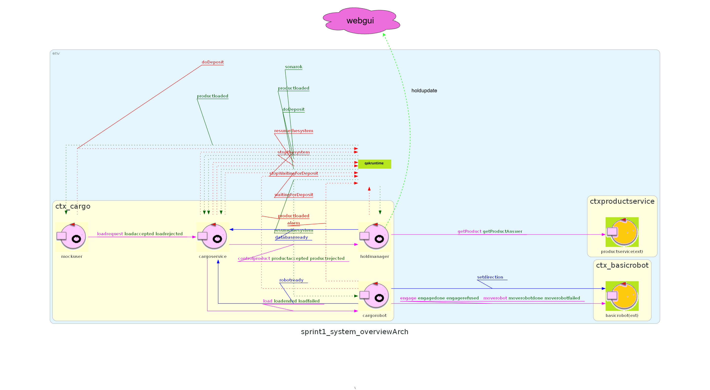

Introduction
Nello Sprint precedente sono state analizzate le problematiche ed è
stato progettato il contesto operativo del componente Sensor
L'output finale è stato una modellazione di alto livello del sistema
e una prima implementazione funzionante (figura a destra).
L'obiettivo dello Sprint 3 è di analizzare le problematiche relative allo sviluppo di un'interfaccia grafica per l'utente finale (GUI) e realizzarne un'implementazione funzionante, integrandola con i componenti del sistema già modellati neglle fasi precedenti.
L'obiettivo dello Sprint 3 è di analizzare le problematiche relative allo sviluppo di un'interfaccia grafica per l'utente finale (GUI) e realizzarne un'implementazione funzionante, integrandola con i componenti del sistema già modellati neglle fasi precedenti.

Requirements
Il sistema deve soddisfare il seguente requisito:
- Deve fornire un'interfaccia grafica web dinamica che consenta agli utenti di visualizzare in tempo reale lo stato della hold.
Problem analysis
Come modellare GUI?
Da requisiti la GUI deve essere accessibile via web, pertanto occorre implementarla come applicazione web-based. Questo consente di rendere la GUI accessibile
da qualsiasi dispositivo dotato di un browser web, senza la necessità di installare software aggiuntivo.
A questo scopo si suggerisce di utilizzare un framework di sviluppo come SpringBoot, il quale permette di sviluppare applicazioni web in Java in grado di interfacciarsi agevolmente con i sistemi precedentemente implementati. Si suggerisce pertanto di modellare la GUI non come attore a stati finiti ma come un'entità separata in grado di comunicare con cargoservice.
A questo scopo si suggerisce di utilizzare un framework di sviluppo come SpringBoot, il quale permette di sviluppare applicazioni web in Java in grado di interfacciarsi agevolmente con i sistemi precedentemente implementati. Si suggerisce pertanto di modellare la GUI non come attore a stati finiti ma come un'entità separata in grado di comunicare con cargoservice.
Come estrarre le informazioni sullo stato della hold?
L'attore holdmanager, in esecuzione nel contesto ctx_cargo, contesto del corebusiness del sistema
aggiorna costantemente lo stato della hold in seguito al caricamento prodotti.
Per consentire alla GUI di visualizzare lo stato della hold, si possono esaminare molteplici modalità alternative, come ad esempio:
- Implementare un'interfaccia RESTful nell'attore holdmanager per consentire alla GUI di effettuare richieste HTTP e ottenere lo stato della hold in formato JSON.
- Utilizzare un sistema di messaggistica (ad esempio MQTT o WebSocket) per inviare aggiornamenti in tempo reale dalla holdmanager alla GUI ogni volta che lo stato della hold cambia.
- Implementare un meccanismo di polling nella GUI che richieda periodicamente lo stato della hold all'attore holdmanager.
- Prevedere l' aggiornamento di una risorsa CoAP da parte di holdmanager e recuperarne lo stato ad ogni cambiamento.
Come visualizzare lo stato della hold in una GUI?
Le informazioni import riguardanti la hold che devono essere visualizzate sono:
Per realizzare la GUI ed implementare le logiche necessarie all'estrazione dello stato della hold dal core business, si suggerisce di realizzare un progetto SpringBoot Per estrarre le informazioni dall'attore holdobserver si consiglia di realizzare un progetto
- Che slot sono occupati e le informazioni riguardanti i prodotti che contengono (PID, Nome, Peso)
- Peso totale della hold e peso massimo che può assumere
Per realizzare la GUI ed implementare le logiche necessarie all'estrazione dello stato della hold dal core business, si suggerisce di realizzare un progetto SpringBoot Per estrarre le informazioni dall'attore holdobserver si consiglia di realizzare un progetto
Logical Architecture

Test plans
Project
Per lo sviluppo del progetto della web gui è stato scelto di adottare
il framework SpringBoot, un framework Java per lo sviluppo di applicazioni web
che dunque si integra bene con le tecnologie utilizzate nel sistema e le librerie
fornite dal committente.
Le classi che ricoprono ruoli principali sono:
Le classi che ricoprono ruoli principali sono:
- CoapToWS: componente che funge da client CoAP e gestisce degli aggiornamenti.
- WSHandler: componente che sfruttando il framework SpringBoot per la gestione di WebSocket.
- HoldStateService: componente che fornisce accesso TCP al contesto di esecuzione di cargoservice e interrogazione su richiesta dello stato.
comportamento CoapToWS
La classe CoapToWS implementa un osservatore CoAP che si iscrive alla risorsa holdstate
esposta dall'attore holdmanager.
package unibo.webgui.coap;
import org.eclipse.californium.core.CoapClient;
import org.eclipse.californium.core.CoapHandler;
import org.eclipse.californium.core.CoapObserveRelation;
import org.eclipse.californium.core.CoapResponse;
import org.json.JSONObject;
import org.springframework.beans.factory.annotation.Autowired;
import org.springframework.stereotype.Component;
import jakarta.annotation.PostConstruct;
import unibo.basicomm23.utils.CommUtils;
import unibo.webgui.utils.HoldResponseParser;
import unibo.webgui.ws.WSHandler;
@Component
public class CoapToWS {
private static final String COAP_ENDPOINT_HOLD = "coap://127.0.0.1:8014/ctx_cargo/holdmanager";
private static final String COAP_ENDPOINT_ROBOT = "coap://127.0.0.1:8014/ctx_cargo/cargorobot";
private CoapClient clienthold;
private CoapClient clientrobot;
private CoapObserveRelation observeRelationHold;
private CoapObserveRelation observeRelationRobot;
@Autowired
private WSHandler wsHandler;
@PostConstruct
public void init() {
// inizializza clienthold e clientrobot
clienthold = new CoapClient(COAP_ENDPOINT_HOLD);
observeRelationHold = clienthold.observe(new CoapHandler() {
@Override
public void onLoad(CoapResponse response) {
String content = response.getResponseText();
CommUtils.outblue("CoAP payload - hold: " + content);
try {
JSONObject payload = HoldResponseParser.parseHoldState(content);
if (payload != null) {
wsHandler.sendToAll(payload.toString());
} else {
CommUtils.outred("Evento CoAP non valido: " + content);
}
} catch (Exception e) {
e.printStackTrace();
}
}
@Override
public void onError() {
System.err.println("Errore nell'osservazione CoAP su " + COAP_ENDPOINT_HOLD);
}
});
System.out.println("Iniziata osservazione CoAP su: " + COAP_ENDPOINT_HOLD);
clientrobot = new CoapClient(COAP_ENDPOINT_ROBOT);
observeRelationRobot = clientrobot.observe(new CoapHandler() {
@Override
public void onLoad(CoapResponse response) {
String content = response.getResponseText();
CommUtils.outblue("CoAP payload - robot: " + content);
try {
JSONObject payload = HoldResponseParser.parseRobotState(content);
if (payload != null) {
wsHandler.sendToAll(payload.toString());
} else {
CommUtils.outred("Evento CoAP non valido: " + content);
}
} catch (Exception e) {
e.printStackTrace();
}
}
@Override
public void onError() {
System.err.println("Errore nell'osservazione CoAP su " + COAP_ENDPOINT_ROBOT);
}
});
System.out.println("Iniziata osservazione CoAP su: " + COAP_ENDPOINT_ROBOT);
}
}
Ogni volta che la risorsa viene aggiornata
l'osservatore riceve l'aggiornamento, estrae il payload della risposta e grazie ad una classe
ausiliaria HoldResponseParser estrae le informazioni rilevanti dallo stato della hold quali
pid, nome e peso dei prodotti caricati.
(lo stato della hold in formato JSON) e inoltrandolo a tutti i client WebSocket
connessi tramite la classe WSHandler.
package unibo.webgui.utils;
import org.json.JSONObject;
import org.json.JSONArray;
import java.util.ArrayList;
import java.util.List;
public class HoldResponseParser {
public static JSONObject parseHoldState(String message) {
String jsonString = null;
JSONObject payload = new JSONObject();
if (message.startsWith("'") && message.endsWith("'")) {
jsonString = message.substring(1, message.length()-1);
}
else if(message.startsWith("{")) {
jsonString = message;
}
System.out.println(jsonString);
JSONObject holdstate = new JSONObject(jsonString);
int maxload = holdstate.getInt("MAXLOAD");
JSONArray pidsJSON = holdstate.getJSONArray("pids");
JSONArray namesJSON = holdstate.getJSONArray("names");
JSONArray weightsJSON = holdstate.getJSONArray("weights");
List pids = new ArrayList<>();
List names = new ArrayList<>();
List weights = new ArrayList<>();
for (int i = 0; i < pidsJSON.length(); i++) {
pids.add(pidsJSON.getInt(i));
}
for (int i = 0; i < namesJSON.length(); i++) {
names.add(namesJSON.getString(i));
}
for (int i = 0; i < weightsJSON.length(); i++) {
weights.add(weightsJSON.getInt(i));
}
payload.put("maxload", maxload);
payload.put("pids", pids);
payload.put("names", names);
payload.put("weights", weights);
return payload;
}
}
comportamento WSHandler
Si tratta di un componente SpringBoot che gestisce le connessioni WebSocket con i client.
Funge da "intermediario" tra il componente CoapToWS e i client WebSocket.
package unibo.webgui.ws;
import org.springframework.stereotype.Component;
import org.springframework.web.socket.CloseStatus;
import org.springframework.web.socket.TextMessage;
import org.springframework.web.socket.WebSocketSession;
import org.springframework.web.socket.handler.TextWebSocketHandler;
import java.io.IOException;
import java.util.List;
import java.util.concurrent.CopyOnWriteArrayList;
@Component
public class WSHandler extends TextWebSocketHandler {
private final List sessions = new CopyOnWriteArrayList<>();
@Override
public void afterConnectionEstablished(WebSocketSession session) {
sessions.add(session);
}
@Override
public void afterConnectionClosed(WebSocketSession session, CloseStatus status) {
sessions.remove(session);
}
public void sendToAll(String message) throws IOException {
for (WebSocketSession session : sessions) {
if (session.isOpen()) {
session.sendMessage(new TextMessage(message));
}
}
}
}
Nel medesimo package è presente la classe di configurazione WebSocket WebSocketConfig che implementa
l'interfaccia WebSocketConfigurer di SpringBoot per registrare il gestore WSHandler
all'endpoint "/ws/holdstate", rendendolo accessibile ai client WebSocket.
package unibo.webgui.ws;
import org.springframework.context.annotation.Configuration;
import org.springframework.web.socket.config.annotation.EnableWebSocket;
import org.springframework.web.socket.config.annotation.WebSocketConfigurer;
import org.springframework.web.socket.config.annotation.WebSocketHandlerRegistry;
@Configuration
@EnableWebSocket
public class WebSocketConfig implements WebSocketConfigurer {
private final WSHandler handler;
public WebSocketConfig(WSHandler handler) {
this.handler = handler;
}
@Override
public void registerWebSocketHandlers(WebSocketHandlerRegistry registry) {
registry.addHandler(handler, "/holdupdates")
.setAllowedOrigins("*");
}
}
comportamento HoldStateService
Questo componente fornisce un'interfaccia TCP per interrogare lo stato della hold
direttamente dal contesto di esecuzione di cargoservice.
package unibo.webgui.service;
import org.json.JSONObject;
import org.springframework.beans.factory.annotation.Autowired;
import org.springframework.web.bind.annotation.GetMapping;
import org.springframework.web.bind.annotation.RestController;
import unibo.basicomm23.interfaces.IApplMessage;
import unibo.basicomm23.interfaces.Interaction;
import unibo.basicomm23.msg.ProtocolType;
import unibo.basicomm23.utils.CommUtils;
import unibo.basicomm23.utils.ConnectionFactory;
import unibo.webgui.utils.HoldResponseParser;
import unibo.webgui.ws.WSHandler;
@RestController
public class HoldStateService {
@Autowired
private WSHandler wsHandler;
private Interaction conn;
public HoldStateService() {
try {
conn = ConnectionFactory.createClientSupport23(ProtocolType.tcp, "127.0.0.1", "8014");
} catch (Exception e) {
System.err.println("Errore nella connessione TCP iniziale: " + e.getMessage());
}
}
@GetMapping("/holdstate")
public String getHoldState() {
try {
IApplMessage request = CommUtils.buildRequest("webgui", "getholdstate", "getholdstate(X)", "holdmanager");
IApplMessage response = conn.request(request);
CommUtils.outblue("hold-state query response:" + response.msgContent());
String jsonString = response.msgContent().substring(
"'holdstate(".length(),
response.msgContent().length() - 2
);
JSONObject payload = HoldResponseParser.parseHoldState(jsonString);
if (payload != null) {
wsHandler.sendToAll(payload.toString());
return payload.toString();
} else {
return "{\"error\":\"payload nullo\"}";
}
} catch (Exception e) {
e.printStackTrace();
return "{\"error\":\"" + e.getMessage() + "\"}";
}
}
}
Estensioni
Sebbene non espressamente richiesto dai requisiti, è stato implementato un meccanismo di inserimento di richieste di caricamento
dei prodotti tramite la GUI, così da poter rimuovere la dipendenza da attori esterni per il caricamento dei prodotti. (nel corso
dello sviluppo del core business era stato previsto un attore mockuser per questo scopo). Lo
scopo è quello di riuscire a trasmettere all'attore cargoservice una loadrequest(pid) opportunamente
formattata.
è stata creata una nuova classe CallerService per implementare questa funzionalità.
è stata creata una nuova classe CallerService per implementare questa funzionalità.
package unibo.webgui.service;
import org.json.JSONObject;
import org.springframework.beans.factory.annotation.Autowired;
import org.springframework.web.bind.annotation.GetMapping;
import org.springframework.web.bind.annotation.RequestParam;
import org.springframework.web.bind.annotation.RestController;
import unibo.basicomm23.interfaces.IApplMessage;
import unibo.basicomm23.interfaces.Interaction;
import unibo.basicomm23.msg.ProtocolType;
import unibo.basicomm23.utils.CommUtils;
import unibo.basicomm23.utils.ConnectionFactory;
import unibo.webgui.utils.HoldResponseParser;
import unibo.webgui.ws.WSHandler;
@RestController
public class CallerService {
@Autowired
private WSHandler wsHandler;
private Interaction conn;
public CallerService() {
try {
conn = ConnectionFactory.createClientSupport23(ProtocolType.tcp, "127.0.0.1", "8014");
} catch (Exception e) {
System.err.println("Errore nella connessione TCP iniziale: " + e.getMessage());
}
try {
conn = ConnectionFactory.createClientSupport23(ProtocolType.tcp, "127.0.0.1", "8014");
CommUtils.outgreen("Connessione TCP creata correttamente");
} catch (Exception e) {
e.printStackTrace();
conn = null;
}
}
@GetMapping("/loadrequest")
public String callCargoservice(@RequestParam("pid") String pid) {
try {
CommUtils.outblue("send request to cargoservice");
IApplMessage getreq = CommUtils.buildRequest ("webgui", "loadrequest","loadrequest("+pid+")", "cargoservice");
IApplMessage answer = conn.request(getreq);
CommUtils.outgreen("response" + answer);
return answer.msgContent();
} catch (Exception e) {
e.printStackTrace();
return "{\"error\":\"" + e.getMessage() + "\"}";
}
}
}